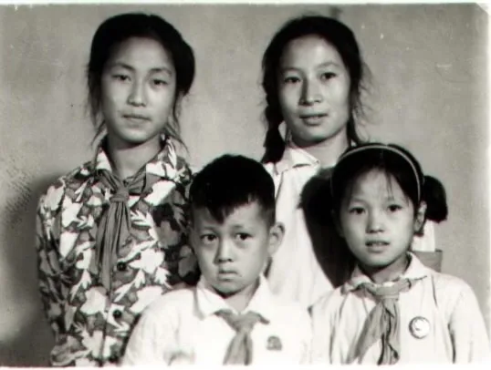

十三 回归
一九六零年逃离山东，十八年了，又千方百计要返回山东，看似矛盾，却是事实。
文革结束，改革开放，思想活跃了，秘密准备了多年的计划，敢于公开了。一九七七年我们向单位领导提出书面申请，交上申请材料，基层科室领导同意了，再到矿党委书面申请。为了得到批准，九个矿党委常委委员中我单个拜访了七个：一把手是孙平均，清正廉洁，从来不接待到他家访问的人；矿长程学增，我帮助过他；党办主任李宝正对我印像较好......三巨头必须首先拿下。
孙书记刚调到矿党委一年多。据传他的原则是，要求调离的人员，一概不批。他清正廉洁不多吃多占，不要求矿上额外的补助。但刚搬到我矿安家，困难特多。有一天他的老伴儿孙大嫂在办公楼后拔野草野菜，我特意凑上去问她，她说家里吃粮本来就紧张，鸡鸭又没有饲料了，新来乍到无处掏换，着急犯愁呢。正巧那天我的同事鲁波说她有30斤粮票要按原价卖给我，现在正好转给了她。她十分感激我解了她的燃眉之急，顺便拉起山东老家，又攀上了老乡关系。我趁机向她诉说了最伤心难办的申请调转的难题。我用言语暗示她，此事其他常委我都求过，都表态支持我，只要孙书记不特意阻拦，我的调转就好办。事后知道孙书记的确没有坚持否决意见。

她十分感激我解了她的燃眉之急，顺便拉起山东老家，又攀上了老乡关系。
程矿长曾经与我有约，遇有难事找他。他的儿子在井下工作，条件差，危险大。儿子一上班，程大嫂就失眠不睡觉，跟他打架。当时正遇上工农兵大学招生，我矿分得五个名额，要求很严格。一线工人要想政审合格，得是劳动模范，经过群众选举和坑口党委推荐。挑选出的五个候选人都是思想好、劳动好的适龄青年，可是程的儿子没选上。程矿长来找我帮忙，如何让坑口党支书给推荐。我也感到事情难办，便建议他把坑口初选交上来的五个人名中，以政审不合格拿下一个腾出空缺。“明天是上交学员名单的最后一天，你以视察生产的名义提前去到坑口党支书的办公室里。我上了班就打电话给党支部，就说报上来的名单中有一个政审不合格，要重新换一个。那时你正在现场，因为临时换人，时间又急，只能把你儿子填上。” 就是这样我们演了一出双簧，他儿子得到了带薪上学的机会。时隔一年，我申请调转。一天，我趁他独自在办公室去找他，把办公室门一关，问：“我的调转申请本周六要开会表决，你准备怎么表态？” 他说他不反对。我说：“这事虽然不是你主管，但你必须帮助我。” 他笑着说:“我会守约的。” 事后证明，在调转工作过程中，他在暗中帮了很大的忙。
最不好办的是党办主任李保证。这个老头机关太深，闹不明白他的话是假是真，但他却主管人事调转，跟他谈过几次，总是不能如愿。幸好年关将近，三妹给孩子们邮寄来了大枣、鱼干、糖等东北最稀罕的东西，当时我把六条最大的鱼干和一点糖作为礼物，到他家里拜访。没想到他十分热情地接待了我，允许我从头诉说了要求调动的理由。交谈中他很认真地谈到了关里的教育水平比东北高，非常担心自己的孙子将来上学的问题。我当时就打了保票：“只要我回到潍坊安好家，就让你的孙子跟我到山东上学，到那时你可得舍得！” 他满口答应下次开会讨论我的申请。
年三十下午提前放假，我特意在办公室留到最后，等李主任从办公室出来。他路过我的办公室，看到我还没走，就问我：“咋的了？” 我在抹着眼泪，看那封老家来信哪。趁他问，我说：“你们全家过年团团圆圆，我们的双亲年迈多病，孤苦伶仃，怎么过年啊。” 他忍不住笑了，说：“范建华，你在给我摆龙门阵呢。我知道了，过了年党委开会就讨论这些问题。看得出你是非走不可了。留住人留不住心，等党委讨论通过了，走就走吧。现在你该放心地回家过节了吧？”

年三十下午提前放假，我特意在办公室留到最后
至此，九个常委中七个我都拜访了。后来听人说开会讨论我的材料时，意见出奇得一致，连李主任都觉得奇怪。
矿上同意放行了，山东方面就得马上发来商调信。幸亏我姐姐范振华早已做好工作。商调信很快发到了鸡西矿务局干部处，再由干部处下发我矿干部科。我怕中间出问题，一天三次到矿干部科查询。没想到那个平日不苟言笑长相难看的科员张国军把我叫到他的办公桌前，轻声地说：“你这么上心着急怕出事，很有道理。有好多人的商调信来到矿上，往往传出去，那些走不了的人，就去闹腾攀比，最后把事情搅黄。” 我急忙求他指点迷津。他偷偷告诉我：“咱们矿通风员桂永德的弟弟叫桂永芳，刚从部队转业，调来矿务局专管干部调动，你快去求他。如果他直接回复来函，可以免去好多麻烦。” 我当时高兴极了，谢过他，急忙去找桂永德师傅。天随人愿，他正在锅炉房值班，听了我的要求非常高兴，满口答应。并说：“你的事就是我的事，今天下了班，我不回家，直接去鸡西找我弟弟。” 第二天，桂师傅对我说他叫弟弟亲自办这件事，他弟弟可以叫矿干部科把所有材料调上去，他直接跟山东联系。
没想到事情如此顺利。三年来日夜筹划，用尽心思，受尽难为，竟这样一下解决，反而觉得不大可能。似喜似悲，恍惚等了半个月，桂师傅来到我家里高兴又有点卖弄地拿出一个信封：“看我给你把事儿办成了吧。该怎么谢谢我？” 打开信封一看，就是一张盖了公章的商调信。得信后我立刻启程回到山东，交到潍坊教育局孙局长手里，批准接受了，我才回到矿上搬家。事情办得严密，无声无息。 搬家那天到了火车站，因带的东西太多，付完行李费，没有钱买车票了，只好又返回矿上申请贷款。这一来回，同志们知道了，有的祝福，有的羡慕。特别是黄敏成同志直接批评我不早告诉，来不及给我送行--他比我提前一年申请的，事前还信心十足地对我说“我肯定能走在你的前面”呢。 矿党委批准财务科给了五百元的补助，一家大小才买上了车票，登上了返回老家的火车。一十八年的东北生活结束了。

一家大小才买上了车票，登上了返回老家的火车。
